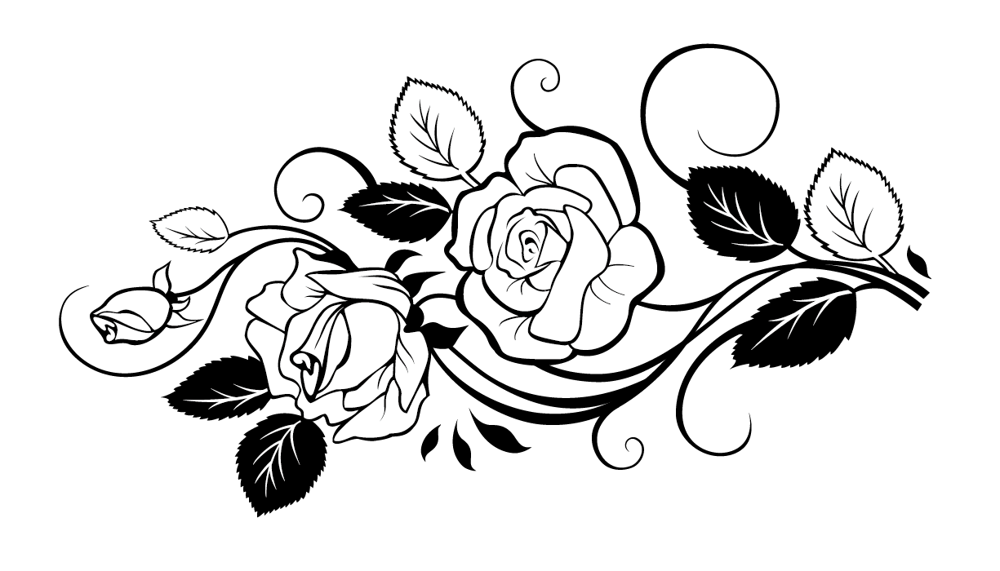

Наша полонина РОЗА ВІТРІВ створена для людей різного віку, де відвідувачі можуть насолодитись як пасивним так і активним відпочинком в будь яку пору року

А ще ця полонина приємно здивує вас асортиментом локальної крафтової продукції власного виробництва
 Vitriv
Vitriv